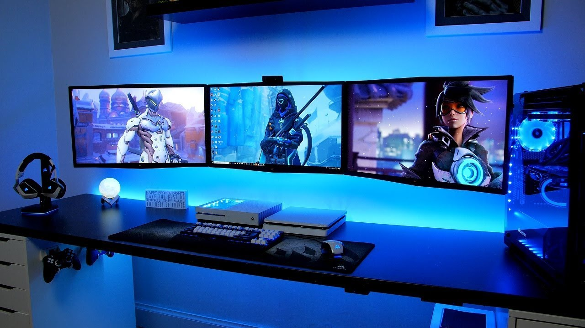
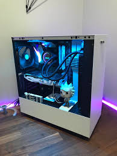

For All Your PC Gaming Information
Welcome to
Now you have your new cool looking PC you might want to sort out your setup.
First you want to find a theme for your setup and try to make your desk, space or room the colours of that theme. You could try to make the wallpapers of the screens in your rooms fit the theme. On your PC download Wallpaper Engine on Steam. It will allow you to get animated wallpapers and you will be sure to find a walllpaper that fits your theme. If your PC has RGB lighting try to make those amtch your theme colours. you could also get coloured lights to relly make your room glow with the coulors of your theme.
Lighting is a very important part of a PC gaming setup, especially if you are doing streaming. If you have many shelves in your room then your setup will look amazing if you have shelf lighting because this will really brighten up what you have put on your shelves. You can also get RGB strips that you can put up behind your desk or in other places in order to really get to parts that need light to fit your theme. RGB strips are very easy to install and your should come with some instuctions. On the back there should be 3M adhesive that you peel and stick to where you want the lights. There are RGB strips that you can also plug into your TV or monitor and it will pick up the colours on sreen and match those colours to make what is being shown on screen more ammersive. You can buy those here.
Putting the right objects in your setup can make a huge difference and you should put in items that fit with your reoom theme and add a nice astetic. Pant and figures work well with gaming setups, especially pop figures. A nice bright green plant in a plain white pot can provide a minimalist astetic that makes your gaming space feel clean and well set out. You can also try putting a figure or two inside your PC, if your PC has a tempered glass side panel, do be careful where you put these however because you dont want to put the figure somewhere where you PC parts could be damaged. If the figure does not fit then do not put it in the PC.
Stickers can also make your setup look great, again though do be careful where you put these because you dont want it to damage anything. A really good sticker shop that I go to is called B-Side Label they make really cool hand-drawn durable stickers.
Do try and keep your setup clean and dont have crap everywhere because it really does make your setup that much better. Try and clean up every once in a while and de-clutter, not only the files on your PC but your room! Try and wipe up dust and keep your windows clean and set everything out so its organised. Try to ustilise space. The les things you have in your room the better, but dont have too little! However, if you have too many things then your room will have less space making it appear smaller than is usually is and if you keep you desk clean and tidy you will have more space to work with. Use cable ties and this cable tray from ikea to make sure you dont have a tangled mess of cables stuffed behind your desk. Ikea has way more cable management products you should really check out and they are really good to get affordable furniture from and they really give your room a minimalist look.
With all of this you can have the best setup the world has ever seen!